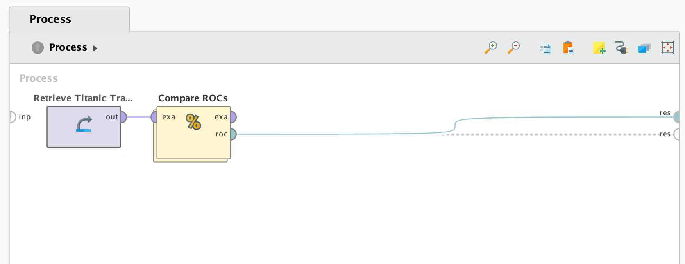

Tutoriales
En esta sección se presentan los tutoriales de los algoritmos de clasificación implementados en el proyecto.
Modeling
Se aplica Decision Tree tomando como input el DataSet entrenado de Titanic, este operador genera un árbol de decisión, en el cuál cada nodo representa una regla de división para cada atributo en especifico. La separación de criterios se da hasta que se llega a un criterio de parada (en el nodo hoja), lo que termina dando como resultado una predicción. En caso de que el atributo sea categorico se divide por las categorías, en caso de ser númerico, se divide entre un promedio mayor y menor.
Por ejemplo:
- Género se divide entre “Male”, “Female”. - Tarifa de pasajero se divide entre mayor y menor a 4500.
La salida “exa” del Decision Tree, que representa lo mismo que se ingresó por entrada al operador. Operador Naive Bayes es un operador de alto sesgo y baja varianza. Se basa en el principio de independencia computacional, lo que significa que asume que todas las caracteristicas en el conjunto de datos son independientes entre si. Por ejemplo: sexo, precio del ticket, edad y demás, son caracteristicas que se van a considerar de forma independiente.
Operador Rule Induction es parecido a Decision Tree pero con la diferencia de que analiza todos los atributos, con su exactitud que es la suma de los valores acertados.
Handling Missing Values
En este tutorial se identifican varios atributos que tienen valores perdidos (missing values): Cabin, Age, Life Boat, Port of Embarkation, Passenger Fare. Lo que se hace es seleccionar todos los atributos menos Life Boat y Cabin porque son atributos con muchos valores perdidos, que no valen la pena. En el operador Replace Missing Values se selecciona el atributo Age para reemplazar todos los valores perdidos por el promedio generado de valores. El operador Filter Examples con la opción de no_missing_values filtra dejando los valores no nulos.
Blending -> es transformar el estado de un DataSet para poder combinarlo con otro. Cleansing -> es mejorar el estado de un DataSet para que pueda entregar mejores resultados.
Normalization and Outlier detection
En este tutorial seleccionamos algunos atributos como en el anterior, los datos se aplica el operador Normalize con el metodo Z-transformation (estandarización) deja a todos los valores con mediana 0 y desviación estándar 1. Esto para que todos los valores tengan la misma escala y puedan ser correctamente comparados. El operador Detect Outlier identifica los 10 primeros outliers. Luego se filtra el DataSet con el operador Filter Examples para que datos que se muestren tengan outlier = false, ya que el operador anterior agrega una nueva columna “outlier” booleana identificando al dato outlier.
Outliers -> valores bordes que estan muy por fuera del rango de valores del DataSet.
Scoring
En este tutorial se utiliza Naves Bayes (explicado anteriormente), luego se utiliza un operador llamado “Apply Model” que aplica un modelo a un conjunto de datos no etiquetados. El puerto “unl” es utilizado para ingresar el conjunto de datos no etiquetados y ser utilizado por el modelo ingresado en el puerto “mod”. El resultado es una predicción por cada pasajero sobre si sobrevivió o no, adicionando una medida de 0 a 1 de confianza.
Test Split and Validation
Split Data toma un conjunto de ejemplos y lo divide en las particiones que definas. En este caso 70/30, ambos datos siguen estando etiquetados. Se generan dos particiones: una con 70% y otra con 30% de los datos. Con un 70% la usaremos para aplicar Naive Bayes, y con el otro 30% para probar y comparar las predicciones. El operador Perfomance calcula que tan bien funciona el modelo.

Get better estimations for accuracy
El operador Cross Validation divide el conjunto de datos en partes iguales y rota a través de todas las partes utilizando siempre una para las pruebas y las demás para entrenar el modelo. Terminando por entregar el promedio de todas las posiciones de prueba como resultado. Necesita un conjunto de datos etiquetados como entrada. Por defecto se divide en 10 folds, pero se puede cambiar en los parámetros.
Cada valor proporcionado en el puerto “per” dentro del subproceso de Cross Validation, va a ser promediado y enviado por el puerto “per” fuera de este operador.
Visual Model Comparison
El operador Receiver Operating Characteristics (ROC) muestra qué tan bien funciona el modelo de aprendizaje automatico binario. Muestra la tasa de verdaderos positivos (TVP) frente a la tasa de falsos positivos (TFP). El resultado es una linea recta diagonal si el modelo siempre adivina correctamente y una curva cada vez más hacia la esquina superior izquierda cuanto mejor se vuelve el modelo.
Al aplicarse el operador ROC para comparar Naive Bayes, Decision Tree y Rule Induction. Se llega a la conclusión, debido a la gráfica, que Naive Bayes es el algoritmo menos eficaz en este caso.
